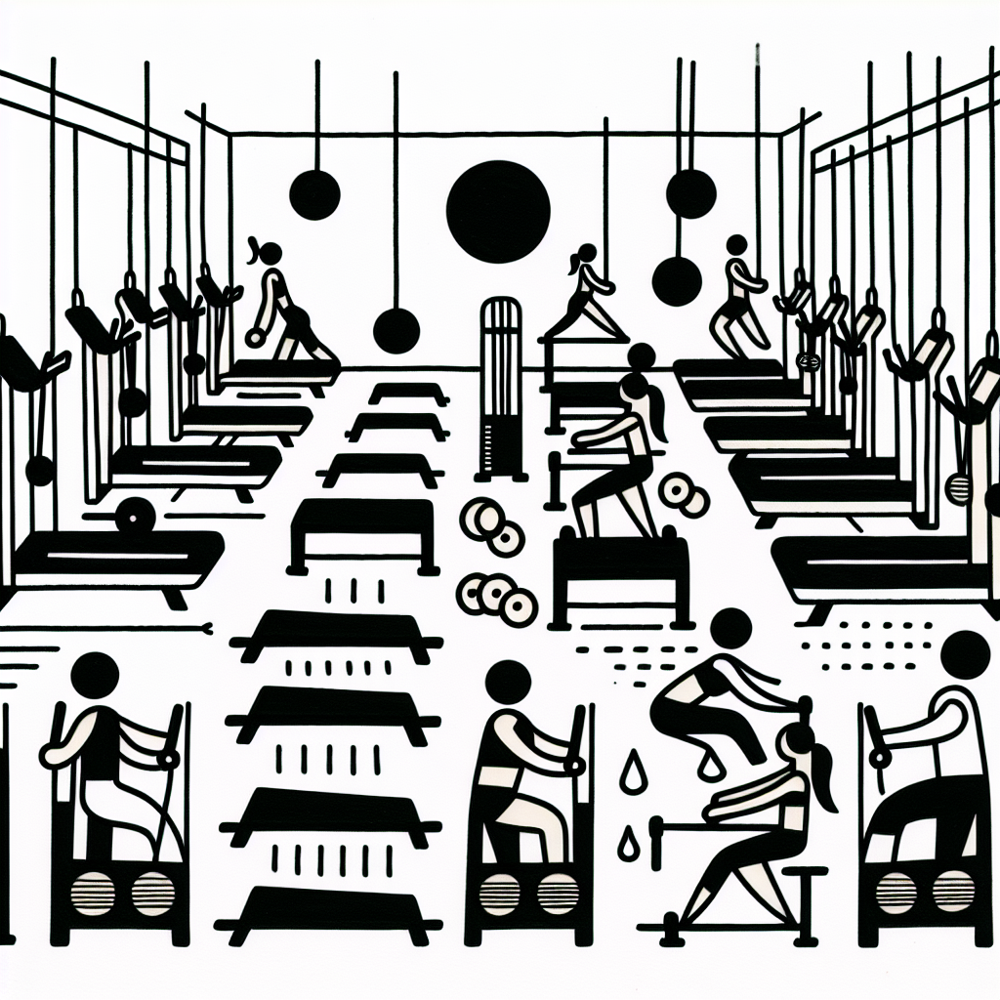

Lagree et perte de poids : le mythe vs la réalité
Lagree et perte de poids : le mythe vs la réalité
Le Pays Basque est connu pour ses vagues impressionnantes et son rythme de vie détendu. Pourtant, ceux qui désirent sculpter leur corps et perdre du poids rapidement sont souvent confrontés à une marée d'informations contradictoires sur les meilleures méthodes à adopter. Parmi les nombreuses techniques de fitness en vogue, le Lagree, pratique innovante venue tout droit d'Hollywood, suscite de plus en plus d'intérêt. Mais quels sont ses véritables effets sur la perte de poids ? Démêlons ensemble le mythe de la réalité.
Qu'est-ce que la méthode Lagree ?
Avant de nous plonger dans les détails de la perte de poids, clarifions d'abord ce qu'est le Lagree. Inspiré par le Pilates mais intensifié, le Lagree est une méthode de renforcement musculaire qui utilise des machines MegaPro spécialement conçues pour proposer un entraînement haute intensité sans impact.
Pourquoi cette méthode attire-t-elle autant ? Elle promet de renforcer, sculpter et tonifier le corps tout en préservant les articulations, le tout en seulement 45 minutes. Ici, au Studio Lagree de DOZ, nous avons intégré ces machines pour offrir aux résidents d'Anglet et ses environs une nouvelle façon d'expérimenter le fitness.
Perte de poids : pourquoi le Lagree est-il souvent mal compris ?
Le Lagree bénéficie d'une popularité grandissante, et pour cause. Cependant, certaines idées fausses circulent à son sujet, notamment en ce qui concerne la perte de poids. Voici quelques-unes des raisons pour lesquelles le Lagree est parfois mal interprété :
- Un effort ressenti différent : Contrairement à d'autres entraînements, le Lagree fait appel à des mouvements lents et contrôlés qui peuvent donner l'impression que l'intensité est moindre. En vérité, cette intensité cachée est la clé de son efficacité.
- L'accent sur le renforcement et la tonification : Si la perte de poids est un objectif légitime, le Lagree se concentre davantage sur le renforcement des muscles et la tonification. Un muscle bien tonifié brûle plus de calories, même au repos.
- Une approche holistique : Le Lagree s'inscrit dans un style de vie sain. Intégré à une alimentation équilibrée et à d'autres pratiques physiques, il optimise le bien-être global.
Les bienfaits concrets du Lagree pour la silhouette
Pour ceux qui s'interrogent sur la manière dont le Lagree affecte réellement votre silhouette, voici quelques bénéfices concrets :
- Augmentation de la masse musculaire : Les séances régulières peuvent entraîner une augmentation visible de la masse musculaire, ce qui améliore le métabolisme de base.
- Amélioration de la posture : Grâce à son accent sur le renforcement du tronc, le Lagree aide à rectifier la posture, ce qui peut vous faire paraître plus mince.
- Réduction du stress : Un esprit détendu est souvent un allié de taille pour éviter le grignotage émotionnel.
- Endurance améliorée : Un entraînement régulier augmente l'endurance, vous permettant de vous investir plus longtemps et plus intensément dans d'autres activités physiques.
L'expérience DOZ : allier le Lagree à une alimentation de qualité
Chez DOZ, nous croyons en une approche complète du bien-être. Outre notre Studio Lagree, notre Coffee Shop chaleureux vous offre une cuisine saine en harmonie avec vos objectifs. Voici comment fusionner l'entraînement et la nutrition :
- Choisir des ingrédients locaux et de saison : Nos plats sont conçus pour nourrir le corps de manière équilibrée.
- S'assurer de l'apport en protéines : Post-entraînement, une alimentation riche en protéines aide à la croissance et à la récupération des muscles.
- Opter pour des boissons sans sucre ajouté : Nos cafés de spécialité torréfiés vous offrent un coup de pouce énergétique sans excès de sucre.
Conclusion : Embrasser le mode de vie DOZ
Bien plus qu'une simple méthode de fitness, le Lagree est une philosophie qui s'intègre parfaitement à l'art de vivre basque promu par DOZ. Que vous soyez un surfeur aguerri ou simplement en quête d'une silhouette plus tonique, le Lagree vous offre une méthode efficace et bienveillante pour avancer vers vos objectifs.
Curieux de découvrir ce que cela pourrait apporter à votre routine ? Réservez sans attendre votre première séance de Lagree et venez savourer un délicieux café de spécialité au DOZ. Ici, chaque instant est brut, authentique, et conçu pour récompenser vos efforts. À bientôt à Anglet pour une expl’Énergies à tester !